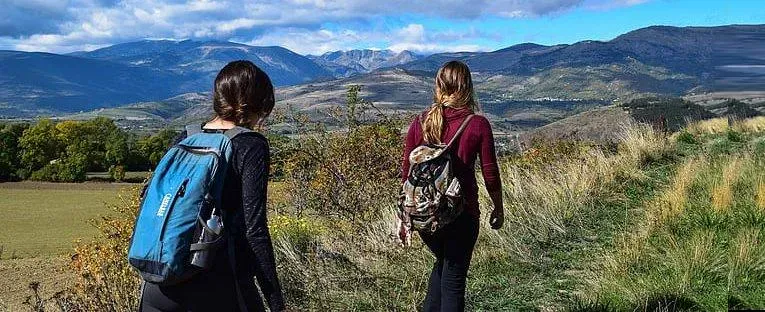
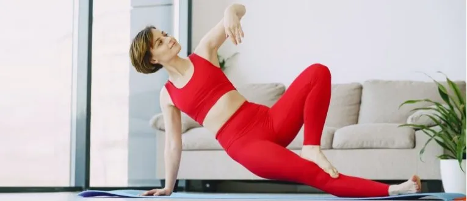

It can be expensive to stay fit when you factor in gym membership and class costs, but it doesn’t have to be that way. Here, we show you eight ways to maintain fitness without gym equipment or trainer fees.
More and more of us are taking up sports, watching hundreds of hours of online fitness videos, and signing up to a growing number of health initiatives aimed at getting us moving, so there’s really never been a better time to get fit for free. All it takes is a bit of research, so lets dig in…
More of us are running now than ever before, thanks, in part, to free running groups that have sprung up over the past few years. parkrun is one such group which has inspired thousands to lace up. Held each Saturday morning in outdoor spaces around the country, parkrun is a free, chip-timed 5K run, open to every ability. A number of sports retailers have free running groups so be sure to check out what’s available in your area.
If you’re new to running, there are plenty of free online training plans to get you started such as the free online Nike+ training guides available for download on the company’s website. The course is designed by world-famous coaches like Jerry Schumacher and Chris Bennett and the offerings range from an eight-week 5K plan to an 18-week schedule for aspiring marathoners.
If you feel inspired to stick with it for the long haul then the Boston Athletic Association offers online marathon training plans pegged to its most famous race and it’s totally free.
We also have lots of advice on how to eat before, during, and after your run.

Health professionals recommend that we should aim to do 30 minutes of moderate exercise at least five times a week. Walking counts as moderate exercise, so it often takes just a few changes to your lifestyle to achieve this target. If you’re keen to explore your area on foot, there are lots of free walking groups and clubs, some run by local councils, others by fellow walkers keen to meet like-minded people. American Volkssport Association (AVA) and Meetup are good places to start.
The great outdoors is yours for the taking when you have two wheels. If you don’t own a bike then the government’s Bicycle Subsidy Program is a great way to acquire one. Ask your employer if they are part of the program. If you’re keen to commute by bike the U.S. Bicycle Route System (USBRS) is a developing national network of bicycle routes connecting urban and rural communities via signed roads and trails complete with maps so definitely worth checking out.
For advice on how to sustain yourself while on your bike, read our guides on what to eat [before], [during] and [after] [cycling].
Fitness trails also known as outdoor gyms, trim trails or activity trails, feature exercise equipment and can be found in parks and recreation areas around the country. They are great places to do DIY circuits sessions, where you rotate around the different pieces of equipment and work on your strength and co-ordination. The most famous is ofcourse Muscle Beach in Venice CA if you happen to be in that part of the country. You can search for others from Calisthenics Parks in the USA
Doing what you enjoy makes exercise less of a chore and means you’re more likely to stick with it. Whether it’s a casual five-a-side soccer team or a local tennis club, there are thousands of amateur groups and clubs around the country, and many are free to join. Check local listings of professional sports bodies such as the NFL, Rugby Union or Tennis.
Exercise doesn’t have to be about lifting weights or running; any activity which gets your muscles moving and increases your heart rate counts. With this in mind, a number of initiatives have popped up in recent years which get you exercising while doing something else for example green Gyms; these are free outdoor sessions where you are guided in practical activities such as planting trees or building wildlife ponds.
Similarly, GoodGym is a running-based initiative where members get fit to do good in their community. The tasks are many and varied ie you could help to paint a community centre one week, or run to visit an isolated older person in your area the next. GoodGym is popular in the UK but efforts are underway to establish it state side.

If you can’t make the gym, make the gym come to you by turning everyday household items into pieces of equipment. Soup cans are an old favourite to double up as light weights, an old pair of tights can turn into a resistance band, a solid chair is an ideal place to do triceps dips and stairs can be transformed into a fitness step. If you’re keen to get hold of proper weights, keep an eye on sites such as Freecycle where people sometimes give them away for free.
Should you find yourself getting distracted by the TV or radio at home, try exercising in ad breaks: choose a different move for each advert (think squats, lunges, press ups, mountain climbers, sit ups, etc) and keep going until the ad break finishes, repeating in subsequent ad breaks. Checkout YouTube as well, there are amazing workout channels there like the FitnessBlender, Leslie Sansone’s Walk at Home, Roberta’s Gym and many more with some serious ideas for gentle exercise around the home.
In the days of smart phones and smart TVs, there are thousands of easily accessible fitness videos, podcasts and apps you can follow for free. All sorts of activities are available, from pilates and yoga to strength and cardio workouts. Whatever you choose, make sure the advice comes from someone certified by a reputable fitness organisation – in the USA, look out for trainers accredited by NCCA.
If you’re new to exercise or returning to it, the NIS has produced a range of online resources which are good starting points. The Strength & Flex podcast by the NHS in the UK is also a highly recommended resource. It’s a free five-week plan consisting of a series of equipment-free exercises designed to improve your strength and flexibility, and its 10-minutes cardio workout is an amazing aerobic starter.
5
ways smart scales can help you stay
healthy
Best
Budget Fitness Trackers Under $50
The
Best Gadgets to Help You Fall Asleep
Faster
How
fitness trackers motivate us to keep in
shape
Do you have any tips for keeping fit on a budget? We’d love to hear your ideas, write to us at ideas@getfitech.blog…